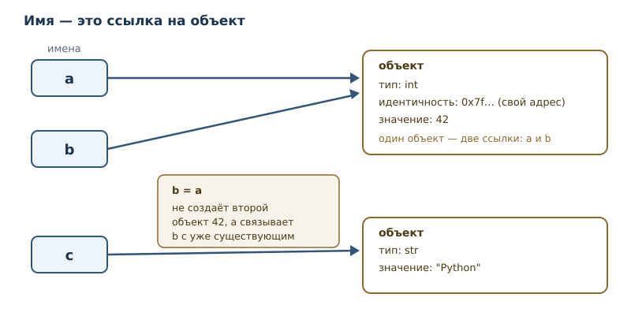
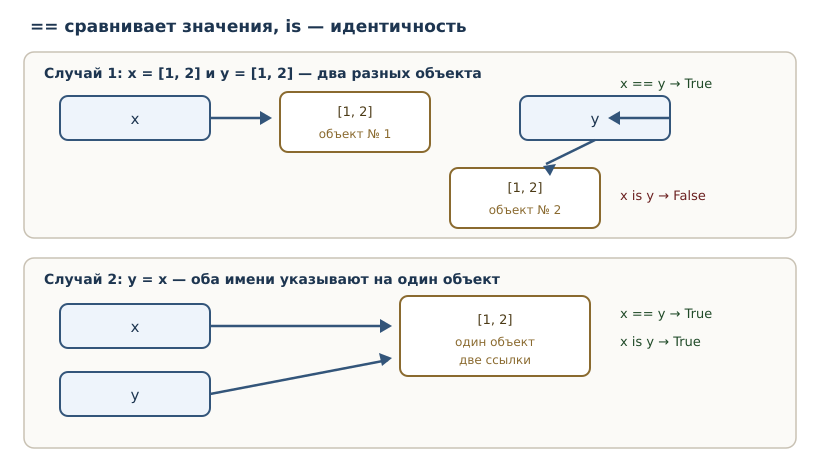

Значения, имена, объекты и типы
Из чего состоит программа: значения, объекты, типы, имена, присваивание и идентичность.
В этой главе
Во второй главе вы вычисляли и выводили значения, но не сохраняли их. Настоящая программа должна помнить данные: цену товара, имя пользователя, результат проверки. Для этого нужны имена. А чтобы понимать, что происходит с данными при присваивании, нужно разобраться, как Python представляет их в памяти.
В этой главе мы построим рабочую модель, на которой держится всё остальное: значение — это объект; у объекта есть тип, идентичность и (обычно) значение; имя — это ссылка на объект. Модель настолько важна, что её следствия будут всплывать в главах о коллекциях, копировании, функциях и классах.
3.1 Что вы сможете после этой главы
- определять тип значения и объяснять, что тип означает;
- понимать, чем
int,float,str,boolиNoneотличаются по смыслу и поведению; - различать имя, объект и значение;
- объяснять, что делает присваивание, и почему оно не «кладёт число в коробку»;
- отличать идентичность (
is) от равенства (==); - понимать, что такое изменяемость и почему она важна.
3.2 Значения и объекты
Значение — то, что программа вычисляет и хранит: число 42, текст
"Python", признак True. В Python всякое значение представлено объектом.
У объекта есть три характеристики:
- тип — определяет, что за значение и какие операции допустимы;
- идентичность — позволяет отличить один объект от другого;
- значение (состояние) — собственно данные; у
Noneнет изменяемого состояния — он и есть значение.
Полезно сразу отказаться от метафоры «переменная — это коробка, в которую кладут число». У неё есть следствия, которые в Python неверны. Правильная метафора: имя — ярлык, привязанный к объекту. Объект существует сам по себе; имя лишь указывает на него.

3.3 Типы
Тип — главная характеристика объекта. Узнать тип можно функцией type:
print(type(42))
print(type(3.14))
print(type("Python"))
print(type(True))
print(type(None))
<class 'int'>
<class 'float'>
<class 'str'>
<class 'bool'>
<class 'NoneType'>
Запись <class 'int'> означает: «это объект класса int». Классы мы подробно
разберём в части 5, а пока тип можно понимать как категорию значения.
int: целые числа
Тип int хранит целые числа. Важная особенность Python: размер целого не
ограничен разрядностью процессора — ограничением служит только доступная
память. В языках с фиксированными 64-битными целыми 2 ** 100 переполнило бы
тип, а в Python это обычное число.
print(2 ** 100)
print(2 ** 100 + 1)
1267650600228229401496703205376
1267650600228229401496703205377
Это гарантия языка, а не особенность CPython.
float: числа с плавающей точкой
Тип float представляет приближённые вещественные числа в двоичном формате
IEEE 754. «Приближённые» — ключевое слово: часть десятичных дробей нельзя
записать в двоичной системе точно.
print(0.1 + 0.2)
print(1 / 3)
0.30000000000000004
0.3333333333333333
Результат 0.1 + 0.2 не равен математическим 0.3: оба слагаемых хранятся с
небольшой погрешностью, и погрешности складываются. Это не дефект Python, а
свойство двоичной арифметики с плавающей точкой; с ним сталкиваются все языки,
использующие IEEE 754. Практические следствия:
- не сравнивайте
floatна точное равенство; сравнивайте с допуском; - для денежных расчётов используйте целые (копейки) или тип
Decimalиз стандартной библиотеки; floatподходит для измерений, научных вычислений и графики.
str: строки
Тип str хранит текст — последовательность символов Unicode. Строки
неизменяемы: после создания строку нельзя изменить, можно только создать новую.
Строки и их методы — тема главы 15; пока достаточно уметь создавать их и
выводить.
bool: логический тип
Тип bool имеет ровно два значения: True и False. Он понадобится для
условий и сравнений (главы 4–5). Небольшая, но полезная деталь: bool
— подтип int, поэтому True ведёт себя как 1, а False — как 0.
print(True + True)
print(type(True))
2
<class 'bool'>
Сложение логических значений редко бывает осмысленным, но понимание подтипа
объясняет, почему True можно использовать там, где ожидается число.
None: отсутствие значения
None — специальное значение типа NoneType, означающее «значения нет».
Оно нужно, чтобы отличать «пусто» от «ноль» или «пустая строка». Функция,
которая ничего не возвращает, возвращает именно None (подробнее в главе 7).
x = None
print(x)
print(x is None)
None
True
3.4 Имена, переменные и присваивание
Имя (идентификатор) — слово, по которому программа обращается к объекту.
Правила: буквы, цифры и подчёркивания; первый символ — не цифра; регистр
важен (age и Age — разные имена). Стиль Python — snake_case:
total_price, user_name.
Переменная в Python — это имя, связанное с объектом. Присваивание —
инструкция имя = выражение; она вычисляет выражение и связывает имя с
результатом. Именно связывает, а не копирует.
x = 1000
y = x
x = x + 1
print(y)
print(x)
1000
1001
Разберём по шагам, потому что это ключевой пример главы:
x = 1000создаёт объект1000и связывает с ним имяx.y = xсвязываетyс тем же объектом, а не с копией.x = x + 1вычисляет1000 + 1, создаёт новый объект1001и связывает с ним имяx. Имяyпо-прежнему указывает на1000.
Отсюда видно, почему метафора «коробки» ломается: y = x не копирует
содержимое, а создаёт вторую ссылку на тот же объект. А x = x + 1 не
изменяет старый объект, а привязывает имя к новому.
Связывание имени
Термин связывание имени подчёркивает, что происходит именно связь «имя → объект». Когда имя переприсваивается, старая связь заменяется; сам объект остаётся в памяти, пока на него есть хотя бы одна ссылка. Когда ссылок не остаётся, объект освобождается — об этом в главе 42.
Динамическая типизация
Python — язык с динамической типизацией: тип проверяется во время исполнения, и одно и то же имя может в разные моменты указывать на объекты разных типов.
x = 1
print(type(x))
x = "один"
print(type(x))
print(x)
<class 'int'>
<class 'str'>
один
Это не «отсутствие типов»: у каждого объекта тип есть всегда. Просто имя не привязано к типу навсегда. Обратная сторона — часть ошибок проявляется только при запуске; инструменты статической проверки (глава 31) помогают найти их заранее.
3.5 Идентичность и оператор is
Идентичность — свойство объекта быть именно этим объектом. Если два имени
связаны с одним объектом, проверка a is b истинна: объект один, значит, и
идентичность одна. Оператор is проверяет идентичность: a is b истинно,
если a и b ссылаются на один и тот же объект.
Функция id возвращает число, идентифицирующее объект (в CPython — его адрес);
id полезна для диагностики, но в коде на неё опираться не нужно.
is следует отличать от ==. Оператор == сравнивает значения
(подробно — в главе 4), а is — идентичность. Для неизменяемых значений
эти проверки часто совпадают, но для изменяемых объектов — нет.

a = [1, 2]
b = [1, 2]
c = a
print(a == b)
print(a is b)
print(a is c)
True
False
True
В этом примере используется список — коллекция, которую мы подробно изучим в главе 13; сейчас достаточно знать, что список хранит несколько значений и изменяем. Смысл примера:
a == b— значения равны (оба списка содержат1и2), поэтомуTrue;a is b— это разные объекты, поэтомуFalse;a is c—cсвязан с тем же объектом, что иa, поэтомуTrue.
Практическое правило: is — для идентичности и None; == — для
сравнения значений. Сравнивать числа или строки через is — ошибка, которая
иногда «работает» из-за оптимизаций CPython и потому особенно опасна.
3.6 Двоичное представление чисел
Компьютер хранит числа в двоичной системе: только нули и единицы. Для программиста это важно не потому, что нужно писать двоичный код, а потому что многие «странности» вычислений объясняются именно представлением.
Целое число в двоичной записи — сумма степеней двойки. Например, 13 — это
1101: 8 + 4 + 1. Python умеет показывать двоичную запись:
print(bin(13))
print(bin(0))
print(2 ** 8)
print(0b1101)
0b1101
0b0
256
13
Префикс 0b означает «двоичный литерал»; 0b1101 — то же число, что 13.
Кроме двоичной записи Python поддерживает восьмеричную (0o17) и
шестнадцатеричную (0x1f) — они удобны для флагов и цветов.
Двоичное представление объясняет две вещи, с которыми вы уже встречались:
floatприблизителен, потому что дробные числа хранятся в двоичном формате с фиксированным числом разрядов:0.1не представимо точно, как1/3нельзя записать конечной десятичной дробью;intне переполняется, потому что размер целого в Python не фиксирован: число занимает столько байт, сколько нужно (детали — в главе 42).
Полезные операции: bin(x) — двоичная строка, int("1101", 2) —
двоичная строка в число, << и >> — сдвиги (побитовые операции
рассматриваются в главе 50, где разбираются ловушки представления).
3.7 Изменяемость
Изменяемость — способность объекта менять своё состояние после создания.
- Неизменяемые (
immutable):int,float,str,bool,None, кортежи. Операции «изменения» создают новый объект. - Изменяемые (
mutable): списки, словари, множества. Их состояние можно менять на месте, и это видят все имена, ссылающиеся на объект.
Списки, кортежи, множества и словари подробно разбираются в главах 13, 14, 16 и 17; здесь достаточно запомнить деление: кортеж, как и строка, после создания не меняется, а список, словарь и множество меняются на месте.
Неизменяемость строки легко показать: s = s + "!" создаёт новую строку, а
старая остаётся неизменной у всех, кто на неё ссылался.
s = "Python"
t = s
s = s + "!"
print(s)
print(t)
Python!
Python
Почему это важно: для изменяемых объектов y = x означает, что изменение
через y увидят все, кто смотрит на тот же объект. Это источник многих
дефектов; подробно — в главе 18.
3.8 Типичные ошибки
- Думать, что присваивание копирует объект.
y = xсоздаёт вторую ссылку, а не копию. - Сравнивать значения через
is.x is 1000может бытьTrueилиFalseв зависимости от внутренних оптимизаций; используйте==. - Сравнивать
Noneчерез==. Работает, но принятоx is None: это проверка идентичности единственного объектаNone. - Сравнивать
floatна точное равенство.0.1 + 0.2 == 0.3ложно; используйте допуск. - Считать, что имя «принадлежит» типу. Одно имя может указывать на объекты разных типов; тип принадлежит объекту.
3.9 Упражнения
1. Типы значений
Не запуская код, определите типы: 42, 3.0, "42", True, None. Затем
проверьте через type и объясните каждое расхождение, если оно обнаружится.
2. Присваивание и переприсваивание
Что выведет программа? Объясните по шагам.
a = 5
b = a
a = a + 1
print(a)
print(b)
3. Присваивание не копирует
Объясните, почему y = x не создаёт второй объект. Как это проверить с помощью
оператора is? Приведите пример.
4. Динамическая типизация
Можно ли в Python выполнить x = 1, а затем x = "текст"? Что при этом
происходит с типами? Почему это не противоречит тому, что у каждого объекта
есть тип?
5. Идентичность и равенство
Объясните разницу между == и is на примере двух списков с одинаковым
содержимым. Когда проверки дают разные результаты?
6. None
Почему для проверки на None рекомендуют x is None, а не x == None?
Сформулируйте ответ через понятие идентичности.
7. Плавающая точка
Почему 0.1 + 0.2 даёт 0.30000000000000004? Что это говорит о сравнении
чисел с плавающей точкой? Предложите корректный способ сравнения.
8. Большие целые
Вычислите 2 ** 200. Сравните с максимальным знаковым 64-битным целым
2 ** 63 - 1 (для беззнакового максимум — 2 ** 64 - 1). Что это говорит об
ограничениях типа int в Python?
9. Допустимые имена
Какие из имён допустимы в Python: 2x, _x, my-var, total_price,
class, итог? Для недопустимых объясните причину.
10. Неизменяемость строк
Докажите примером, что строка неизменяема. Что на самом деле происходит при
выполнении s = s + "!"?
11. Значение и объект
Объясните разницу между «значение 42» и «объект типа int со значением 42».
Почему в Python корректнее второе описание?
12. Один объект — два имени
Создайте два имени, которые ссылаются на один объект, и докажите это оператором
is. Затем переприсвойте одно из имён и объясните, почему теперь is даёт
False.
3.10 Проверка понимания
- Что такое объект и какие три характеристики он имеет?
- Чем имя отличается от объекта?
- Что означает «Python — язык с динамической типизацией»?
- Почему
y = xне копирует объект? - Чем
isотличается от==и когда что применять? - Какие типы изменяемы, а какие нет, и почему это важно?
- Почему
0.1 + 0.2не равно0.3?
3.11 Что дальше
Вы умеете хранить значения в именах и знаете, как устроены объекты. В следующей главе появятся выражения посложнее: сравнения, логические связки, ввод данных и форматирование строк — всё, что нужно для первых настоящих программ с логикой.